Aankomst Las Vegas
De eerste avond blijft bewust leeg.
01Aankomst+
Geplande landing om 17.04 uur. Daarna immigratie, bagage en transfer naar het hotel.
02The Palazzo+
Inchecken, iets eten en vooral rustig landen na de vlucht.
Van de neonlichten van Las Vegas naar rode rotsen, diepe canyons en de legendarische Route 66.
Na de lange vlucht begint onze roadtrip in Las Vegas. Vandaag hoeft er niets meer: aankomen, wennen aan het tijdsverschil en genieten van die eerste avond in Amerika. We slapen één nacht in The Palazzo at The Venetian; morgen halen we de camper op.


De eerste avond blijft bewust leeg.
Geplande landing om 17.04 uur. Daarna immigratie, bagage en transfer naar het hotel.
Inchecken, iets eten en vooral rustig landen na de vlucht.
De camper wordt pas in de namiddag opgehaald.
Rustig ontbijten, eventueel het hotel verkennen of aan het zwembad blijven. Vanaf de camperpick-up gaat de planning verder bij Valley of Fire.
Nog geen twee dagen na vertrek uit België staan we midden in een landschap dat bijna buitenaards aanvoelt. Valley of Fire is compact, maar zit vol grillige zandsteenformaties in rood, oranje, roze, beige en wit. We hebben een volledige dag om het park te verkennen.
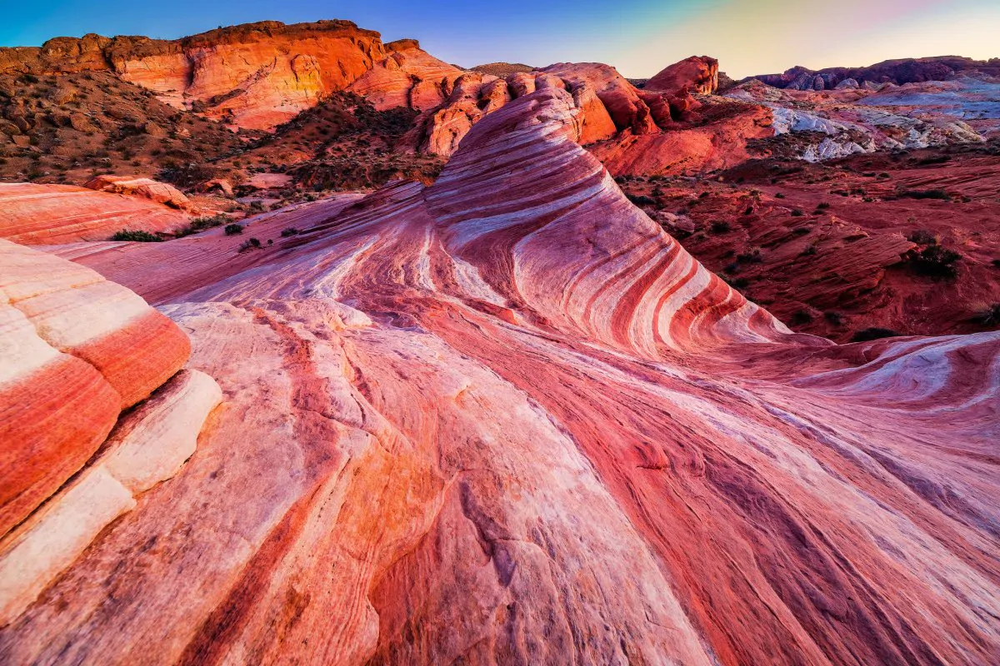
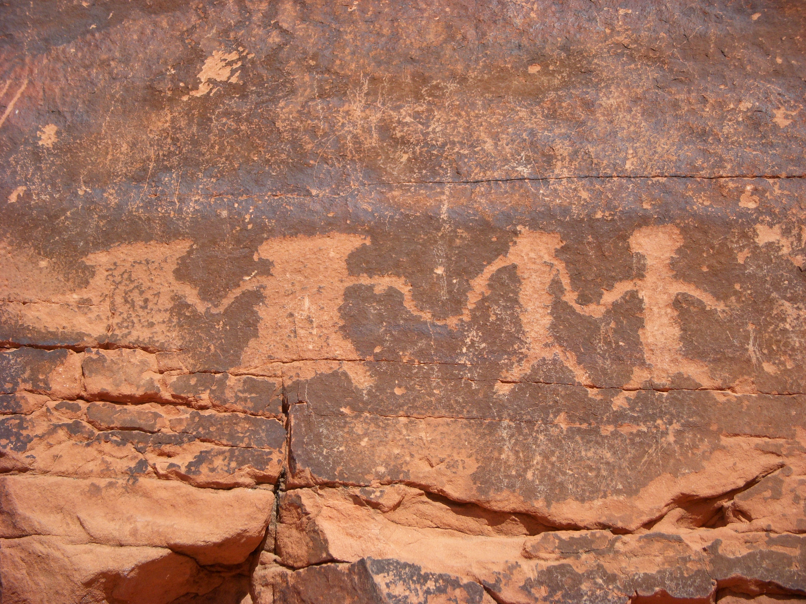
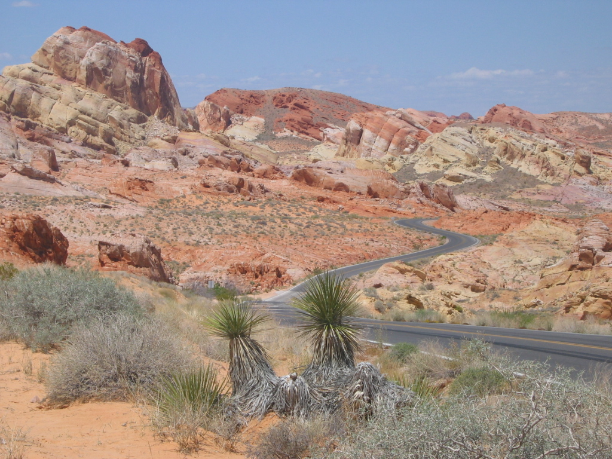
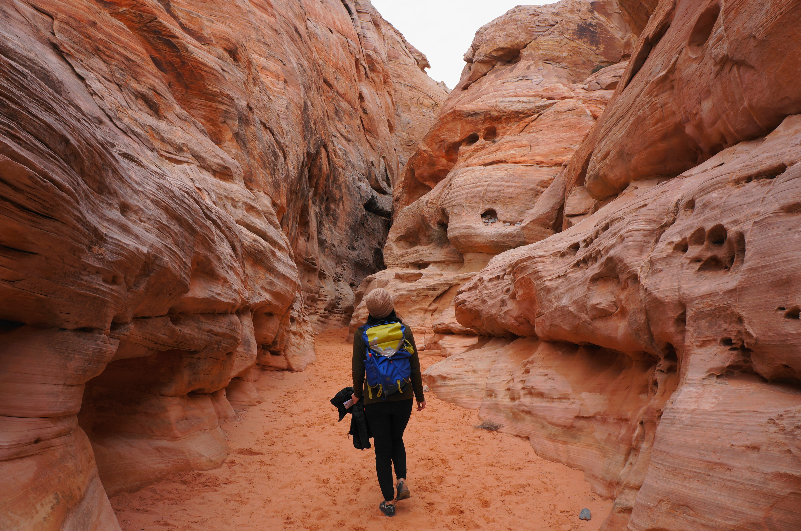
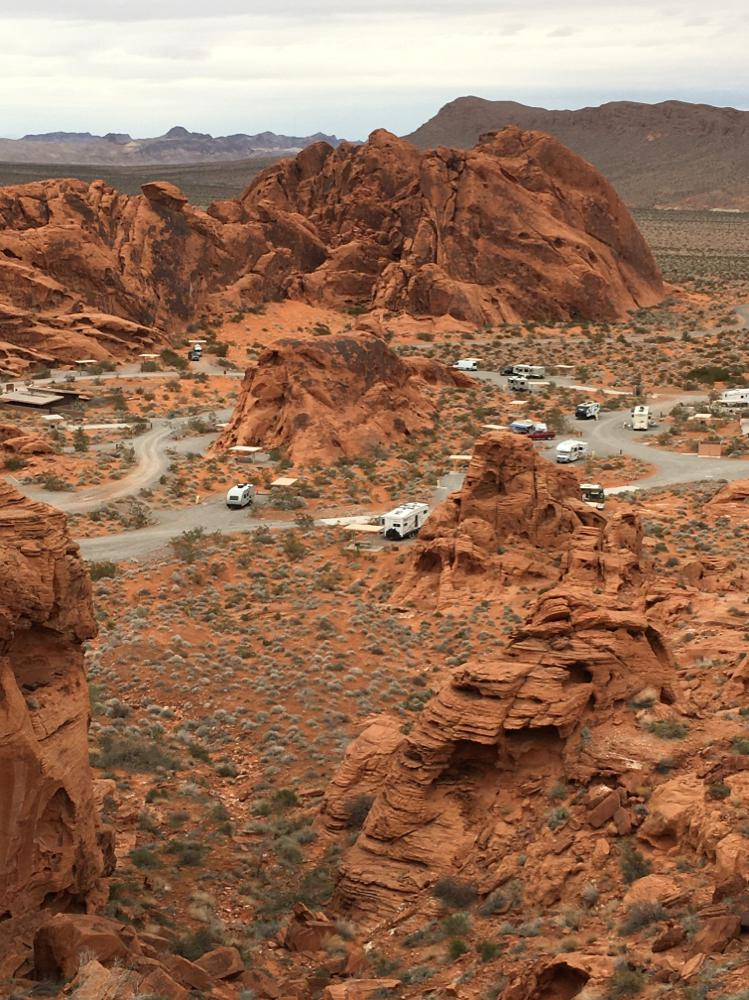
Camper ophalen, voorraad inslaan en naar onze eerste camping.
Vraag naar generator, propaan, afval- en watertanks en wat bij het terugbrengen verwacht wordt.
Autostoel ophalen, dekens/kussen, eten en drinken en eventueel cash.
Via I-15 en de omgeving van Logandale. Campingreservatie bij de hand houden; volgens de notities omvat die ook de parktoegang.
Installeren op Atlatl Rock. Als Modest nog energie heeft, gewoon kort rond de camping wandelen.
Er lopen twee wegen door het park en die leiden je naar verschillende bezienswaardigheden. De reisgids raadt White Domes Road aan. Deze weg van 10 km vertrekt vanaf het Visitor Center in noordelijke richting. Vervolgens parkeer je je wagen en wandel je naar diverse monumenten.
Korte oriëntatiestop.
Een lus van 1,2 km die je naar rotstekeningen brengt die zijn achtergelaten door de Basketmakers.
Korte wandeling (45 min) naar golvende zandsteen met rode, roze, beige en witte banden.
Nog een korte wandeling (45 min) door opvallende rotsformaties.
De eerste camperdag: neem tijd voor de uitleg bij verhuur en probeer niet te veel parkactiviteiten op 22 oktober te plannen.
Twee afzonderlijke reservaties met elektriciteit. Check-in vanaf 14u, checkout om 11u.
We verlaten Nevada en rijden Utah binnen. De rit is meer dan een transfer: Virgin River Gorge en vooral Snow Canyon maken 24 oktober tot een volwaardige reisdag. Op 25 oktober laten we de camper zoveel mogelijk staan en ontdekken we Zion Canyon per fiets.
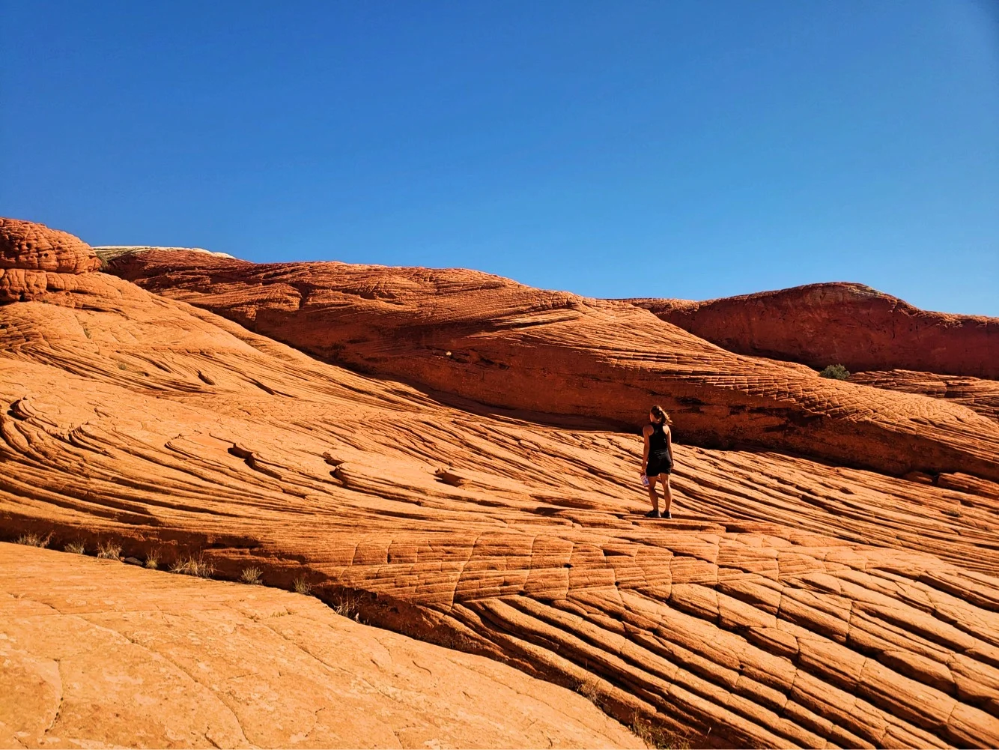
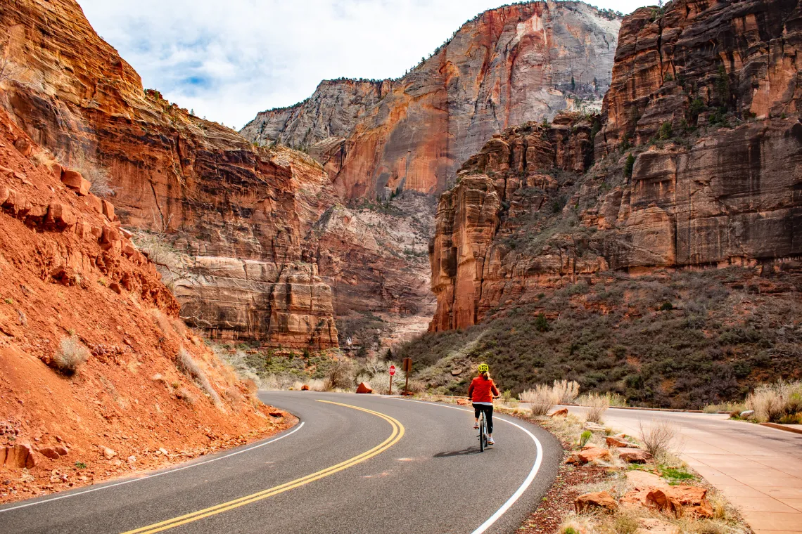
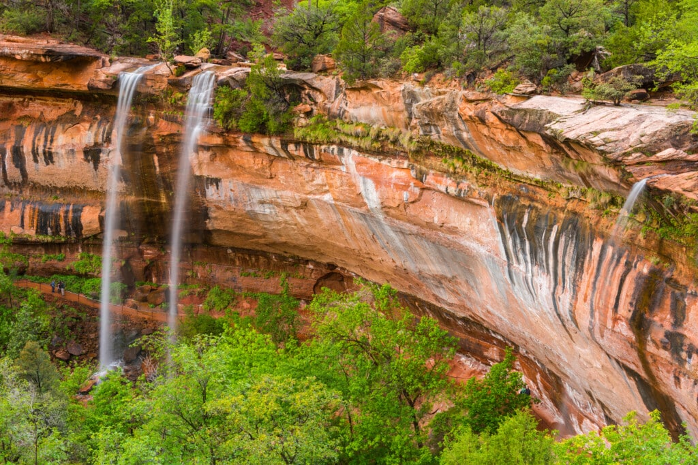
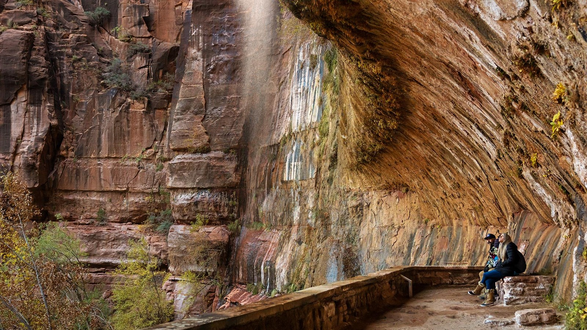
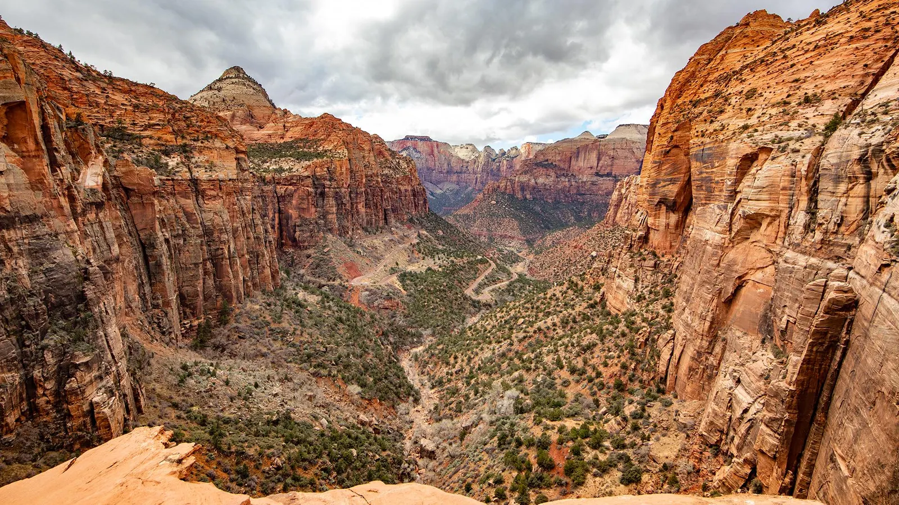
Snow Canyon is de hoofdstop; de rest is bonus.
Tanken en Walmart; een van de laatste grote supermarkten voor de komende dagen. Flying J wordt aangeraden om te tanken met een RV.
Na Mesquite rijdt je door Arizona richting Utah. De Virgin River Gorge is een verrassend mooie passage: de I-15 slingert tussen hoge rood/oranje rotswanden door. Met een peuter en RV is het vooral een "kijk uit het raam en geniet"-stuk. Je hebt hier precies het soort landschap dat jullie de komende dagen nog veel gaan zien, maar dit is een mooie overgang van Nevada naar Utah.
Lunch bij In-N-Out Burger.
We kunnen over de lavavelden wandelen op de Lava Flow Trail en een kijkje nemen in kleine vulkanische grotten (zaklamp meenemen dus). Op de Petrified Dunes Trail klimmen we over golvende duinen van oud, verhard zandsteen, met prachtige uitzichten over de vallei. Daarna kunnen we een korte, makkelijke wandeling maken naar Jenny’s Canyon, een smalle, koele mini-slotcanyon.
Klein Wild West-dorpje. Je kan hier dieren voeren. Dit kan een leuke stop zijn voor Modest.
Een verlaten dorpje uit 1859.
Tussen 17 en 19 uur.
Pa’rus Trail en Zion Canyon Scenic Drive vormen de rode draad. Informatie over alle trails kunnen we hier vinden.
Met de fiets Zion Canyon in; onderweg afstappen waar het goed voelt. Volgende trails lijken me interessant: Emerald Pools, Weeping Rock en Riverside Walk.
Alleen als we die gisteren niet deden en nog zin hebben. Deze start aan de camping maar is volgens de website van NPS gesloten.
Met elektriciteit. Check-in na 12 uur, check-out voor 11 uur. Meer info hier".
Ophalen op 24 oktober tussen 17 en 19 uur bij Zion Guru.
Bryce is geen klassieke canyon maar een hoog plateau waarin erosie duizenden grillige rotspilaren heeft gevormd. We slapen in North Campground en bouwen de volle parkdag rond één hoofdwandeling: Queen’s Garden + Navajo Loop.
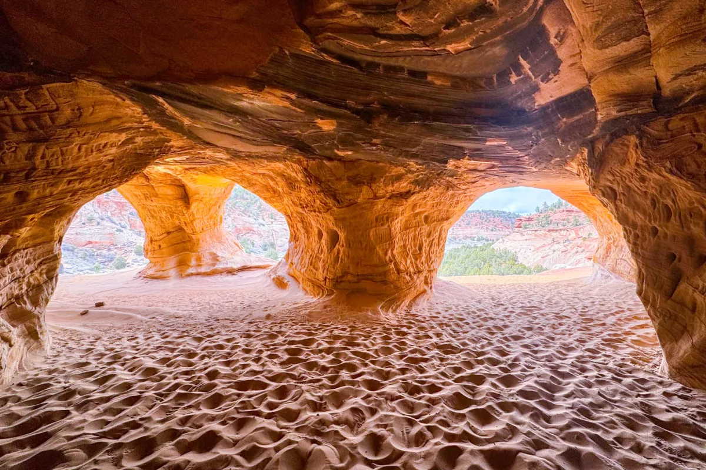
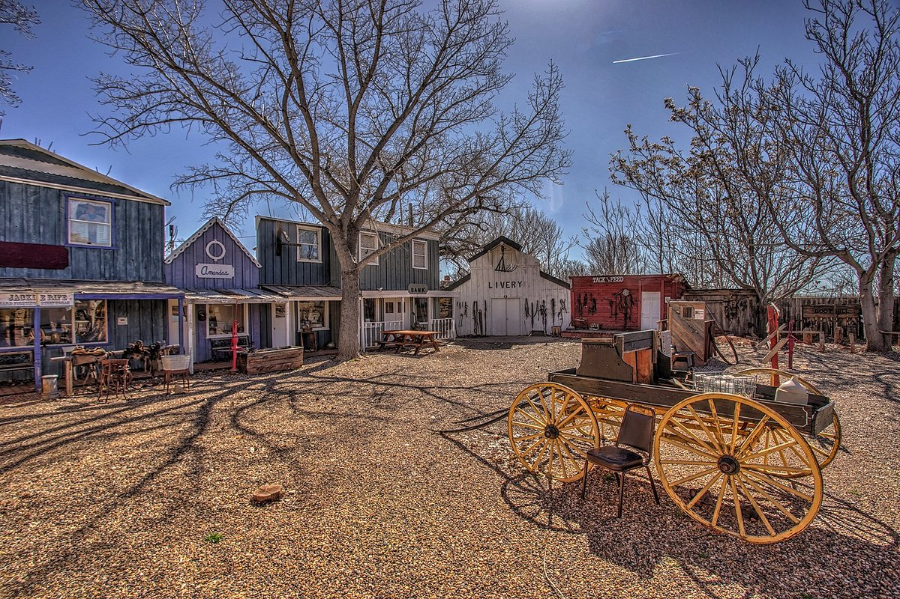
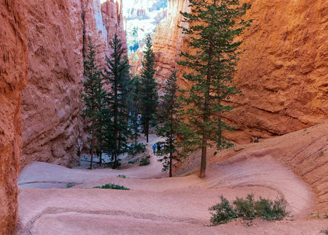
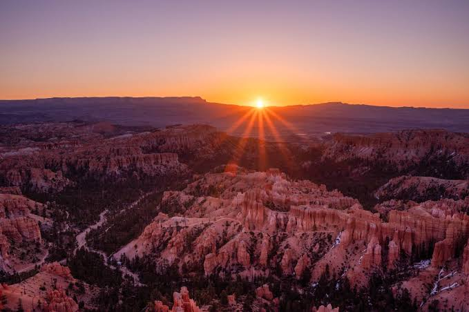
Kies onderweg; niet alles hoeft.
Canyon Overlook (1,6 km), Many Pools (3,4 km) of Clear Creek Wash (3,7 km).
Little Hollywood, Best Friends Animal Society, Sand Caves en boodschappen zijn opties.
Net voor je bij Bryce canyon aankomt, als je Hwy 12 tussen Panguitch en Bryce, kom je langs Red Canyon, die met zijn rode geërodeerde rode rotsen ook de moeite loont. Visitor center sluit wel vanaf eind september, midden oktober maar het park kan nog worden bezocht. Dit is een ideaal voorproefje voor we naar Bryce gaan. Pink Ledges Trail (1,1 km), eventueel Hoodoo Trail erbij.
Installeren en de rest van de dag openhouden.
Eén hoofdwandeling, daarna rust en viewpoints.
Vanaf de camping wandelen; het hoeft niet perfect op het moment van zonsopkomst.
Ongeveer 4,6 km en 2–3 uur, via Sunset Point terug.
Terug naar de camping voor een echte pauze.
Met shuttle of RV afhankelijk van omstandigheden.
Ongeveer 1,6 km als iedereen nog zin heeft.
Route 12 verbindt de omgeving van Bryce met Capitol Reef en voert door voortdurend veranderende landschappen: rode rotsen, canyons, afgelegen gehuchten en uiteindelijk hooggelegen bossen. We willen deze weg bewust traag rijden.
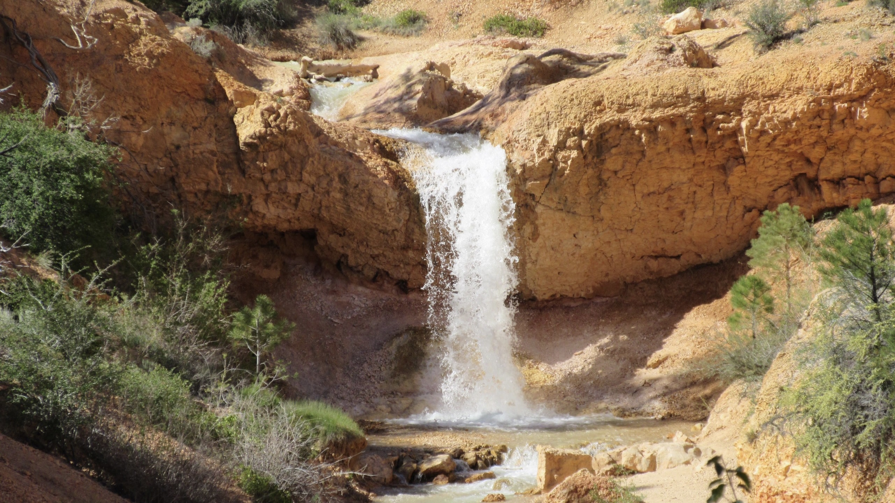
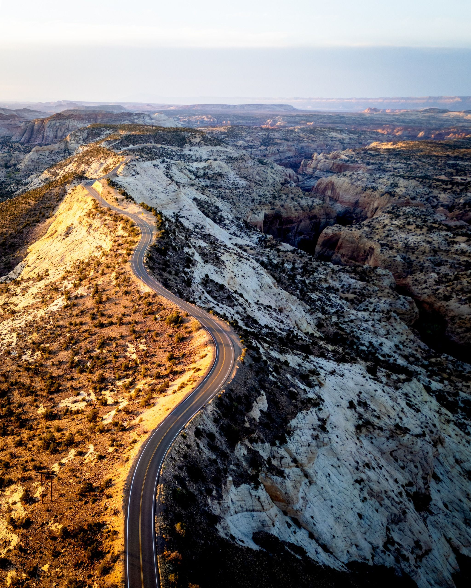
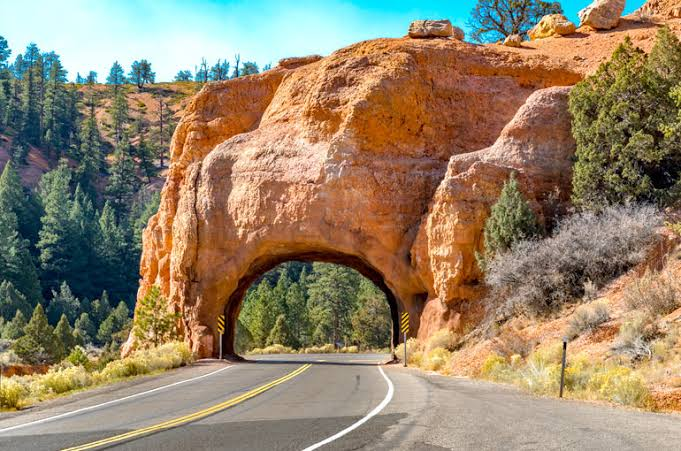
Een roadtripdag met korte stops en veel uitzicht.
Ongeveer 1 km en redelijk vlak, eindigt bij een waterval. qua landschap nog vergelijkbaar met Bryce.
Tanken, eten kopen en liefst lunch meenemen voor een mooie plek onderweg.
Niet vooraf vastleggen dat we de volledige wandeling doen; Route 12 blijft de hoofdactiviteit.
Spectaculair stuk tussen Escalante en Boulder, over een smalle rotskam met open landschap aan beide kanten.
Anasazi State Park Museum; eventueel ook lunch.
De weg klimt richting bos tot ongeveer 3.000 meter.
Speelpleintje voor Modest. Bij uitzonderlijk vroege aankomst richting Fruita verkennen.
Full hookup. Check-in tussen 13u en 19u, check-out voor 11u.
We rijden een gebied binnen waar bereik beperkt is. Zorg ervoor om kaarten en belangrijke info offline beschikbaar te hebben.
We combineren op 29 oktober Fruita in Capitol Reef met Goblin Valley als hoofdstop. Op 30 oktober gaan we vroeg Arches National Park in en houden we de namiddag kindvriendelijk met Moab Giants.
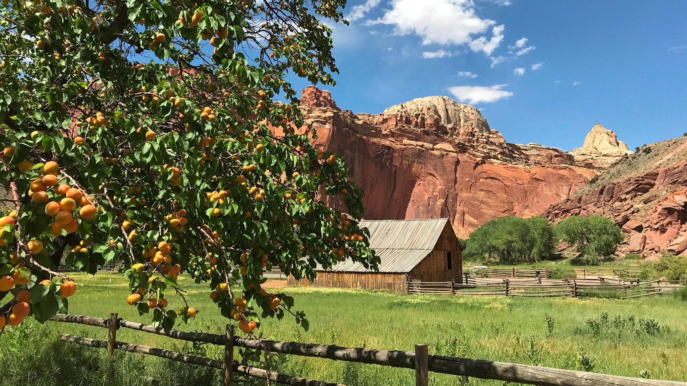
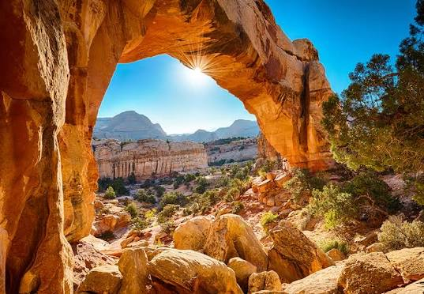
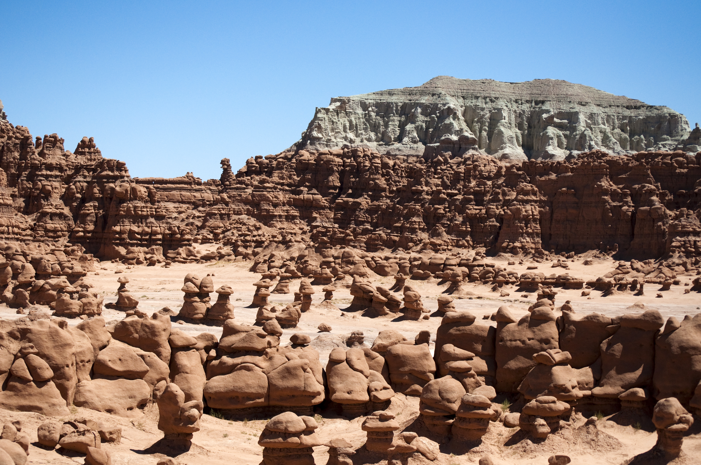
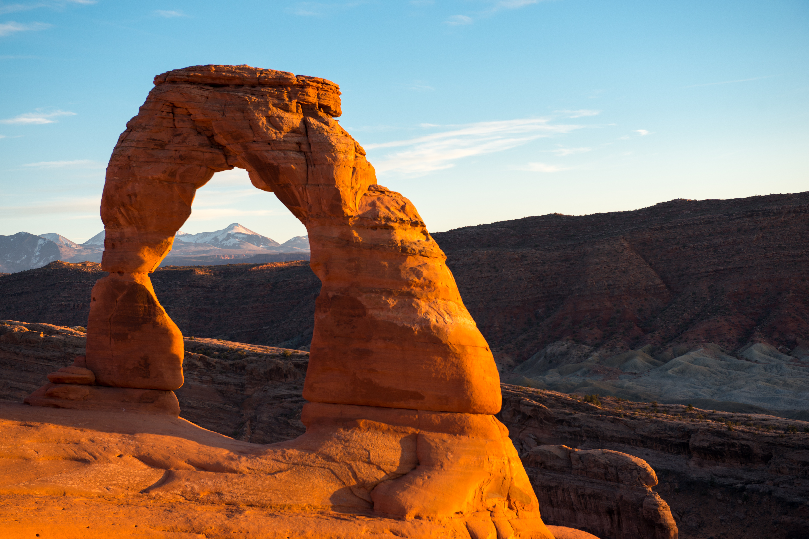
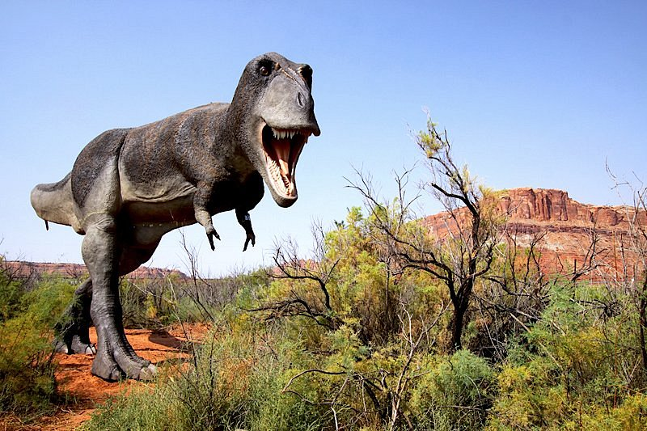
Fruita in de ochtend, Goblin Valley als hoofdavontuur.
Voldoende benzine voor we vertrekken.
Korte wandeling naar indiaanse rotstekeningen.
Korte stop in het historische gebied.
Korte wandeling naar een grote natuurlijke brug; overslaan als de ochtend uitloopt.
Vrij rondzwerven tussen de formaties; geen verplicht pad en daardoor waarschijnlijk top voor Modest.
Korte viewpointstop.
Wandeling van 2,4 km als er nog energie over is.
Vroeg naar Arches; parkeerdruk bepaalt het tempo.
Mikken op ongeveer 7 uur. RV-regel uit de notities: als parkeren krap oogt, meteen doorrijden.
Grote pullout en korte of optionele wandeling.
Korte stop als parkeren eenvoudig is.
Belangrijkste keuze van de ochtend. Eerst Double Arch; Windows alleen als het vlot loopt.
Verborgen speelplek.
Namiddagactiviteit; tickets online kopen.
Moonflower Canyon, King’s Bottom of Ken’s Lake zin opties. Allemaal hebben ze weinig tot geen voorzieningen.
Tickets online kopen.
Na Moab rijden we zuidwaarts naar een van de meest herkenbare landschappen van het Amerikaanse Westen.
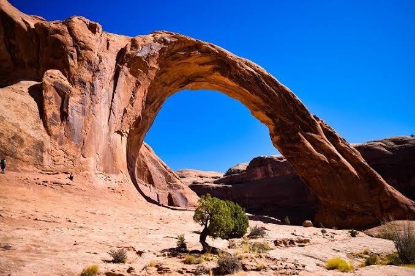

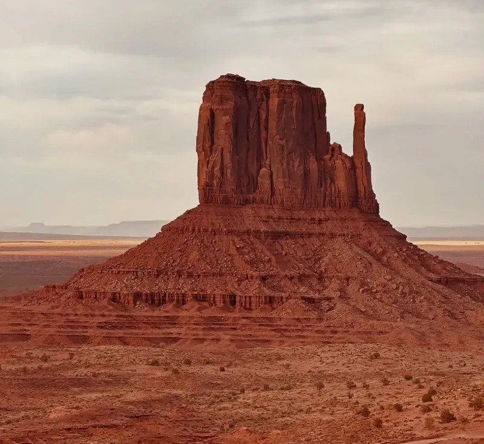
Onderweg enkele korte stops; daarna tijd voor de vallei zelf.
scenic drive langs stijle rotswanden, een hike naar Corona Arch (4 km) of de Poison Spider Dinosaur Trail (0.5 km) behoren tot de mogelijkheden. Er zijn ook diverse plaatsen waar rotstekeningen te bewonderen zijn.
Een bijzondere woning die is uitgehouwen in een zandstenen rots.
Korte scenic stop. Vijf euro per auto.
Iconisch zicht op de weg richting Monument Valley.
Uitzichten en korte wandelmogelijkheden (Wildcat trail).
Culturele stop in/om het park.
Goulding’s RV and campground. Hookup, check-in vanaf 16u, check-out voor 11u. Er is ook een klein museum op de camping.
Page wordt onze basis voor twee nachten. De eerste dag is een rit met mogelijke stops bij Navajo National Monument, Biidi Arch, The New Wave en Horseshoe Bend. De tweede dag is nog bewust open tussen wateractiviteiten en Lower Antelope Canyon.
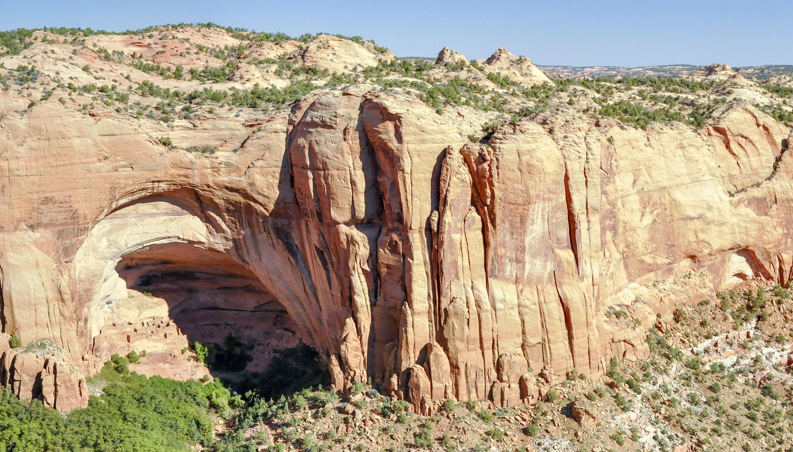
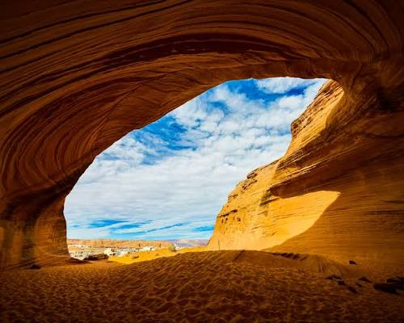
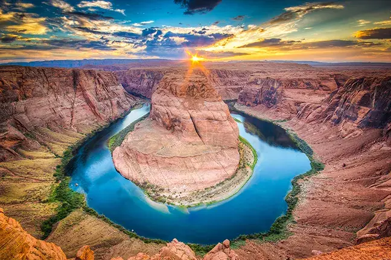
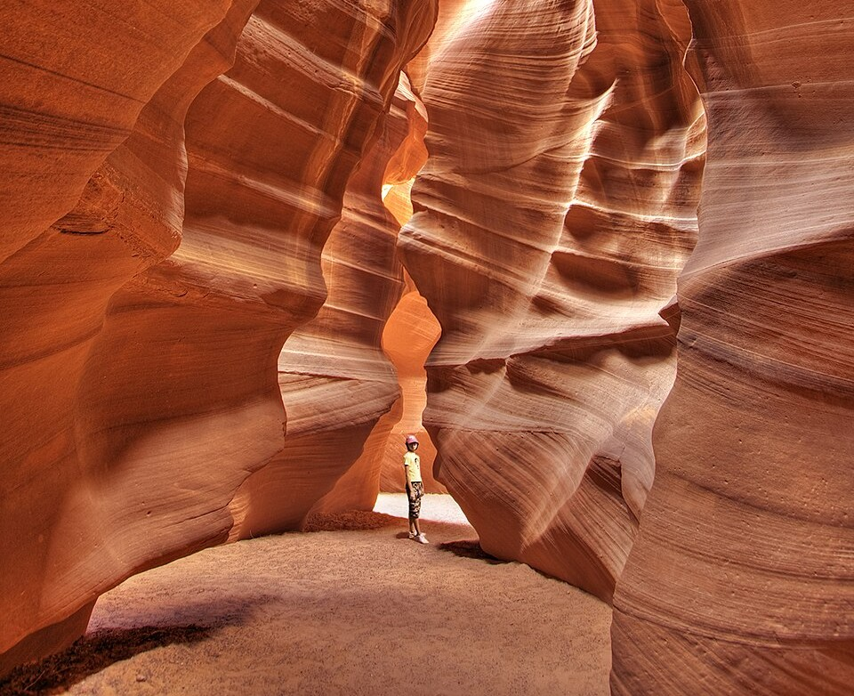
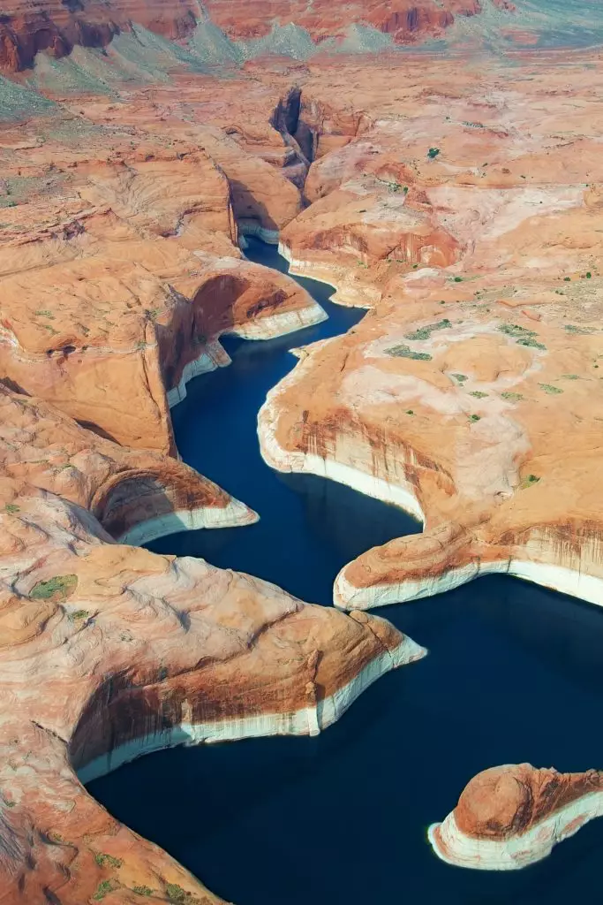
Een flexibele route met meerdere mogelijke stops.
Korte hike; in de verte is er een oude nederzetting te zien.
Achter het Shell tankstation aan US-98.
Mogelijke korte landschapswandeling.
Logische grote stop bij aankomst in Page.
Deze dag vraagt nog een definitieve keuze en reservaties.
Smalle kloof, te bezoeken met een gids.
Echte dinosaurusbotten, een tentoonstelling met fossielen en een muurschildering van het prehistorische landschap (gratis).
Deze paddenstoelvormige rotsen zijn een leuke bestemming voor een expeditie naar een ‘buitenaardse planeet’. De wandeling is ongeveer 2,8 km heen en terug en grotendeels vlak, met een kleine klim. De toegang is gratis.
Redelijk duur en misschien niet ideaal met Modest.
Voor Antelope Canyon moeten we een tour reserveren.
Wahweap rv & campground. Met hookup, check-in vanaf 12u, check-out voor 11u.
Van Page rijden we naar de Grand Canyon.
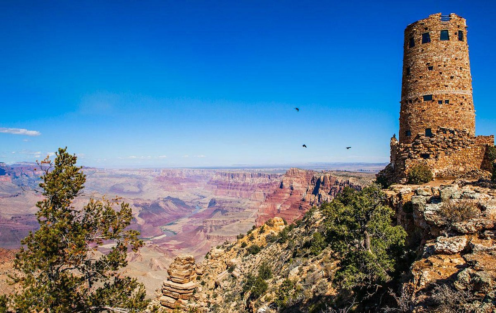
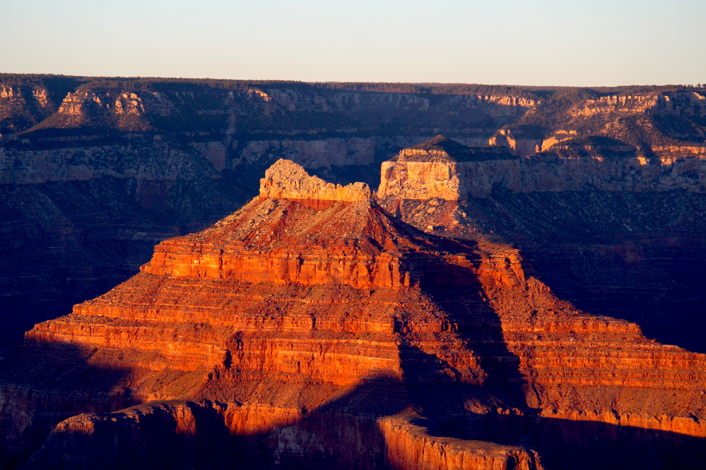
De concrete parkplanning moet nog worden aangevuld.
Het gebied rond Tuba city is bekend omwillen van 200 miljoen jaar oude dinosporen.
Deze kloof bereikt dieptes tot ruim 900 meter.
Vanuit Page rijd je Grand Canyon National Park binnen via de oostelijke ingang en kom je meteen bij Desert View. Het uitzicht is hier heel anders dan vanaf het centrale deel van de South Rim, omdat je lange stukken van de Colorado-rivier kunt zien en in de verte de Painted Desert.
Van Desert View naar Grand Canyon Village volgen we een 37 km lange schilderachtige weg, met talrijke uitzichtpunten. Het is niet nodig om overal te stoppen, beter is één goede uit te kiezen. Vanaf Lipan heb je een bijzonder mooi uitzicht op een lang stuk van de Colorado-rivier, de canyon en de Painted Desert in de verte. De NPS noemt het expliciet een van de indrukwekkendste panorama’s langs Desert View Drive.
Ons installeren op de camping. Een groot voordeel van deze camping is dat je niet met de camper door Grand Canyon Village hoeft te rijden. De gratis blauwe shuttlebus stopt direct bij Mather Campground en rijdt begin november tot 21.00 uur. De bus verbindt de camping met Market Plaza, het Visitor Center en Grand Canyon Village.
Als je moe bent na de rit, houd het dan eenvoudig: Yavapai Point / Rim Trail. Makkelijk bereikbaar, prachtig uitzicht op de canyon en veel minder geregel. Als iedereen nog energie heeft, neem dan de shuttle richting Hopi of Mohave Point aan Hermit Road. Volgens de NPS is Hopi bijzonder geschikt om de zonsondergang te bekijken, en zijn Mohave en Pima uitstekende alternatieven met uitzicht op de Colorado-rivier.
Geen hookup. Check-in vanaf 12u, check-out voor 11u. Meer info hier"